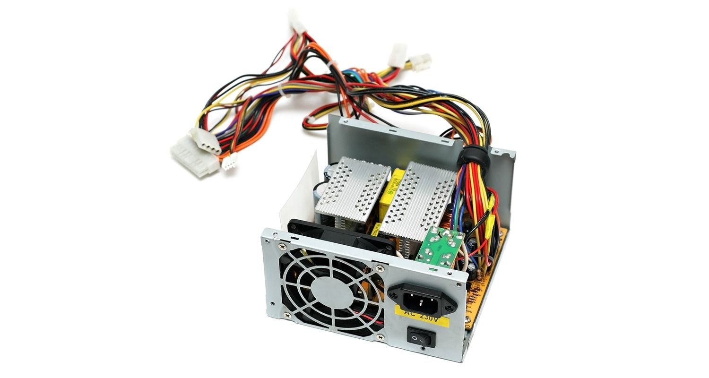

Understanding the parts of a personal computer is helpful when buying, upgrading, or replacing different computer components. A simple definition of computer hardware is “any physical parts or components that contribute to a computer system.” There are several different kinds of hardware inside a PC. Both desktop and laptop PCs include these types of hardware, though the size and type differ because of a laptop’s compact design.
A computer will only function when both hardware and software are working together, with the system's speed largely determined by the hardware
A computer will only function when both hardware and software are working together, with the system's speed largely determined by the hardware
What is Motherboard?

Your computer’s motherboard is the hub that connects all the other pieces of computer hardware, acting as the brain to allocate and coordinate power across all other components.
If you're building a PC or looking to upgrade, it's crucial you consider motherboard compatibility, as this will dictate much of what you'll be able to do.
The motherboard determines which other hardware components can be used with your computer, such as storage devices that come in a 2.5-inch SATA SSD or an M.2 NVMe SSD form factor.
When looking at a new motherboard, it's also advisable to check the number of USB ports and their grade (USB 2.0, 3.0, 3.1). Similarly, it's best to check what display ports are used (HDMI, DVI, RGB) and how many there are.
If you're building a PC or looking to upgrade, it's crucial you consider motherboard compatibility, as this will dictate much of what you'll be able to do.
The motherboard determines which other hardware components can be used with your computer, such as storage devices that come in a 2.5-inch SATA SSD or an M.2 NVMe SSD form factor.
When looking at a new motherboard, it's also advisable to check the number of USB ports and their grade (USB 2.0, 3.0, 3.1). Similarly, it's best to check what display ports are used (HDMI, DVI, RGB) and how many there are.
What is central processing unit CPU?

CPU stands for central processing unit, and it’s responsible for guiding your computer as it processes data, much like
a brain guides a body. The speed at which it does this is known as ‘clock speed’ and is measured in gigahertz (GHz). A CPU
advertising a high GHz rating will generally perform faster than others from the same brand and generation, but this is not
always true as other
processor features and the task at hand can all make a difference. You can read more about different types of processors here.
What is random access memory RAM?

Computer RAM works closely with the CPU and temporarily stores information created by programs so that it's immediately accessible.
It’s sometimes referred to as ‘volatile’
memory because this data gets erased every time your computer restarts.
RAM plays a vital part in many tasks, including rendering images for graphic design, editing videos or photographs, and multitasking with several apps or programs open.
Since RAM is integral to your computer’s functioning, upgrading your memory is one of the quickest and most efficient ways to fix a slow computer.
How much RAM you need depends on the programs you'll be running. Gamers can often get by with 8GB of memory but may want more to improve frames per second (FPS) rates in higher-intensity games. Creatives, like video and graphic designers, may need 16GB of RAM or more to power through intensive apps such as Adobe® Photoshop or After Effects.
To fully understand how RAM speeds, densities, and generations affect your experience as a user, read about the history of DRAM technology, from early SDRAM to the latest DDR5 model.
RAM plays a vital part in many tasks, including rendering images for graphic design, editing videos or photographs, and multitasking with several apps or programs open.
Since RAM is integral to your computer’s functioning, upgrading your memory is one of the quickest and most efficient ways to fix a slow computer.
How much RAM you need depends on the programs you'll be running. Gamers can often get by with 8GB of memory but may want more to improve frames per second (FPS) rates in higher-intensity games. Creatives, like video and graphic designers, may need 16GB of RAM or more to power through intensive apps such as Adobe® Photoshop or After Effects.
To fully understand how RAM speeds, densities, and generations affect your experience as a user, read about the history of DRAM technology, from early SDRAM to the latest DDR5 model.
What is graphics processing unit GPU?

The GPU does precisely what its name suggests — it processes vast amounts of graphical data. A dedicated graphics card connects with the motherboard via an expansion slot, so you can upgrade your graphics card if you want to improve gaming, video, or visual performance from your PC.
Modern GPUs also provide additional computational workload beyond just rendering, making them an extension of the central processing unit.
Modern GPUs also provide additional computational workload beyond just rendering, making them an extension of the central processing unit.
What is power supply unit PSU?

A PSU takes electricity from an external power source or laptop battery and passes it to the motherboard to power individual hardware components. this makes it essential to use a power supply with suitable wattage.
A modern computer will generally need a PSU rated between 500 and 850W to effectively power all computer hardware. However, computers used for highly intensive tasks, such as graphic design or gaming, will require more powerful components and a bigger PSU.
We recommend using a power supply that gives you some extra leeway. This will guard you against system failures and help future-proof your system for when you want to upgrade to more powerful components.
A modern computer will generally need a PSU rated between 500 and 850W to effectively power all computer hardware. However, computers used for highly intensive tasks, such as graphic design or gaming, will require more powerful components and a bigger PSU.
We recommend using a power supply that gives you some extra leeway. This will guard you against system failures and help future-proof your system for when you want to upgrade to more powerful components.
What is graphics processing unit GPU?

SSDs and HDDs are two types of storage drives responsible for saving any program, apps, or files installed on your computer, even when it’s turned off.
Hard drives (HDDs) are an older technology that works by writing binary data onto spinning magnetic disks, or platters, that rotate at high speeds. SSDs are a newer type of drive that stores data on static NAND flash memory chips. In a head-to-head, SSD vs. HDD comparison, SSDs come out as the clear winner, primarily based on speed, durability, and power consumption.
There's a lot to learn about SSDs, since they come in different forms and capabilities. The two main types of SSDs are NVMe and SATA. Your motherboard’s compatibility can help you decide which one is best for your computer.
Hard drives (HDDs) are an older technology that works by writing binary data onto spinning magnetic disks, or platters, that rotate at high speeds. SSDs are a newer type of drive that stores data on static NAND flash memory chips. In a head-to-head, SSD vs. HDD comparison, SSDs come out as the clear winner, primarily based on speed, durability, and power consumption.
There's a lot to learn about SSDs, since they come in different forms and capabilities. The two main types of SSDs are NVMe and SATA. Your motherboard’s compatibility can help you decide which one is best for your computer.